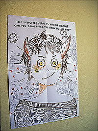

저번주 금요일저녁부터 약간 감기기운이 있었는데
주말에는 나가놀아야 한다는 사명감
+
본전생각에(.........;;) 토요일(3/31)날 pick me up 한번 더 댕겨오고
집에와서 앓아누웠다 ㅡㅡ;;;;;;
토요일/일요일 종일 먹구자구를 반복하믄서 겔겔거리고
이때 내가 갖고있는 약 - 한국에서 가져온것들이
전부 유통기한이 일년이상(........;;) 지났다는걸 발견;;;
원래 환절기때 감기는 꼬박꼬박 걸리는편인데 OTL
작년에 무사통과했더니 감기약들이 갱신(?)이 안되었구나;;;
월요일날 아침에 일어나보니까
생각보다 가뿐하길래 회사출근
몸이 무쟈게 아프다던가 열은 없었는데
하루죙일 코찔찔이;;;;;;
불쌍해보였는지 다들 온갖 영양제와 감기약을 적선해주었다 ㅋㅋㅋ
감기약부자~ ㅋㅋㅋ
화요일은 몸도아픈데 아침에 붐비는 지하철 타기싫어서
아예 좀 늦게출근할 생각으로
집에서 아침9시에 나갔다
그리고 이날 피카딜리라인 사고나서 평소 내 시간대에 이용하는
승객수의 두배 + 가다서다를 반복하는 지하철...........OTL
어우;;; 시간은 평소 배로 걸리고 고생은 고생대로하고 ;ㅂ;
한산한 지하철타서 앉아가겠다고 일부러 늦게 나간건데에에에 ㅜㅜ
그리고 오늘아침에 인나니까 좀 살거같다
코감기가 정말 고통스러운것이
숨을쉴수가읎써 ㅜㅜ
우선 빨리 나으려면 잘먹어야한다는 생각에
월요일날 고기사와서 구워먹고 → 약먹고 →저녁8시부터 취침
다음날 아침8시까지 한번도 안깨고 내리자는 기염을 토했는데ㅋㅋㅋ
화요일은 똑같이 오자마자 밥먹고 약먹고 드러누웠건만
코막힘때문에 잠도 못자고 늠 고통스러웠다능;;;
월화수 3일을 감기약에 찌들어서 겔겔거렸더니 죽겠다;;;;;;
근데 이 와중에도 식욕은 여전한게 촘 슬프다능;;
다른사람들보면 아프면 입맛도없구 해서 살도빠진다는데
나능 헛;;; 이럴때일수록 잘 먹어야해;; 이러구
과일이랑 괴기 바리바리 사와서 요 3일 음청 잘먹었다 ^^;;;;;;
내일하루 로동하믄 여기 이스터라
금토일월 - 4연휴란 말이지 이런 타이밍에 아프다니 옳지않아 ;ㅂ;
난 나가 놀아야해~!! (←;;;;)